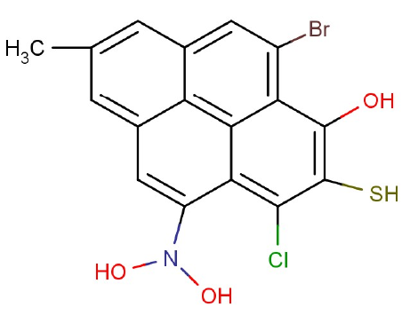
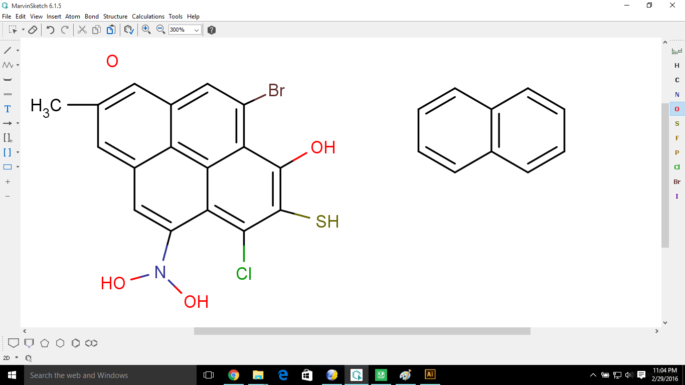
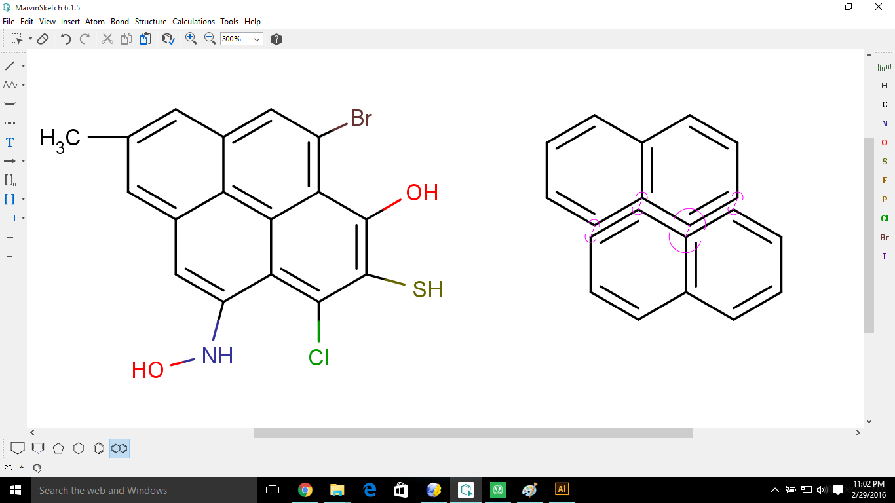
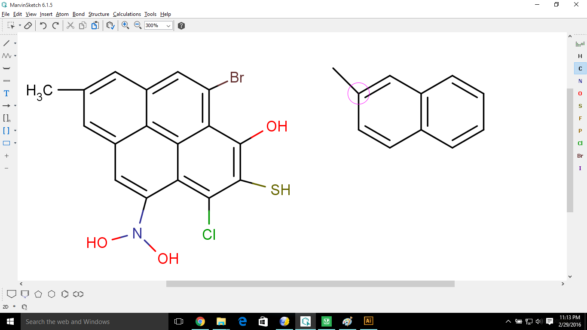
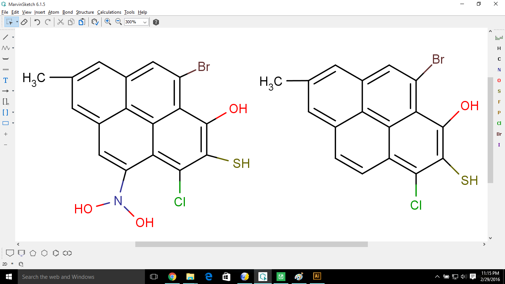
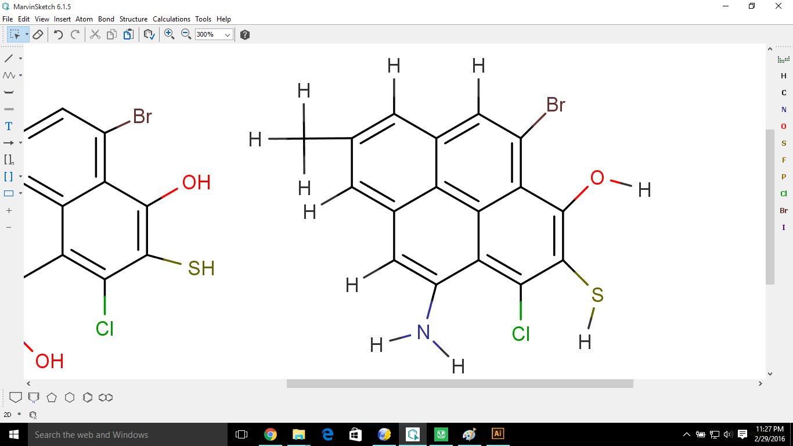
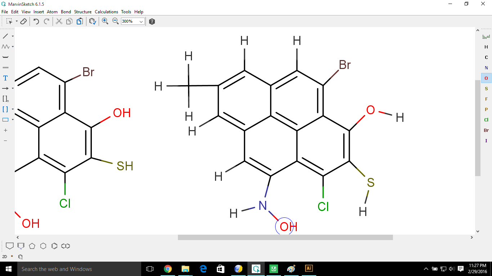
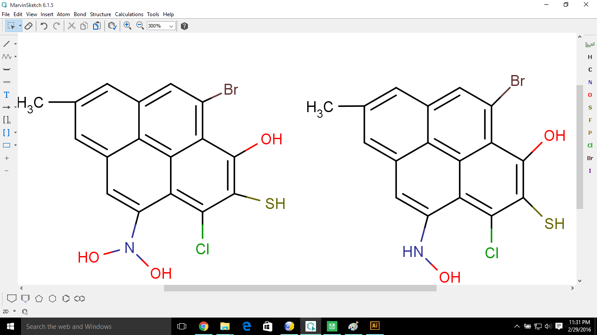

How to draw a structure in
MarvinSketch ?
For suppose we have to draw the following hypothetical structure:

Steps:
- First place a Naphthalene from Compound box.

- Now bring another Naphathalene to the
first one until you get the below situation. Now place it.

- Select C from the Element box. Inorder
to make CH3-
Bond, select desired carbon on parent chain and with the left button
clicked drag the pointer from desired carbon position until the bond
appears.

- Do the similar process for other
elements.

- When it comes to N-(OH)2
, first make NH2 and select Selection Tool and
select the whole structure, by dragging pointer across it.
- Now right-click on the structure and
go to Add
option > select Explicit
Hydrogens. With this hydrogens on all carbons and atoms
will be visible.

- Now select the Hydrogens on the
Nitrogen and go to element box and select O. H automatically gets converted to
OH.

- Again select the whole structure and
go to Remove
option > select Explicit
Hydrogens. With this hydrogens on all carbons and atoms
will not be visible.

In this way, we can draw any structure using MarvinSketch.
How to use it
in Adobe Illustrator?
- First zoom it to the required size.
- Just select the whole structure and
copy it by using Ctrl+C and paste in Adobe Illustrator (You will get
the same size of that you have enlarged).
- You can export the image to desired
format by going to File
menu > select Export
image option. In that you can set the size manually or
zoom it and go to export.
- One can draw long chain by select
long chain option in Bonds ,
start with a point and drag the cursor until desired chain is obtained,
and branches can be added using 1st
option (Single CH3-CH3) in Bonds.
- One
can rotate, reflect, transform .....etc., by selecting the whole
structure and right-click on it , select the desired options.
*Remember it is more like
Adobe Illustrator, just with some chemical features.
The more you practice the more
you excel.
Summary:
- First open MarvinSketch.
- Make your chemical molecule figure
using the Element box,
Compound box and the Bonds.
- Zoom it to required size (because
when you will export the image it's size will be same to that of size
of image visible on the screen after zooming it).
- If want to copy it to Adobe
Illustrator just drag the pointer across the molecule, copy it and
paste it in Adobe Illustrator.
- If you want seperate PNG file, go to
File menu > Select Export option and select PNG format.
Credits: Upendra Sai Teja

Copyright ThinkMerit. All rights
reserved.
 Marvin Sketch Tutorials
Marvin Sketch Tutorials